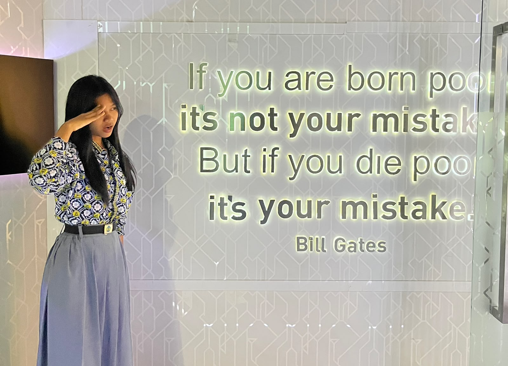

Kesimpulan
BEI bukan hanya tempat jual beli saham. Ia adalah infrastruktur yang membuat perusahaan bisa tumbuh dan masyarakat bisa ikut memiliki bagian dari pertumbuhan itu, dengan aturan yang menjaga kepercayaan semua pihak.
Dalam perjalanan ini, kami melihat langsung bagaimana pasar modal Indonesia bekerja sampai galeri edukasi dalam saham.
Bursa Efek Indonesia (BEI) atau Indonesia Stock Exchange (IDX) adalah penyelenggara pasar tempat saham, obligasi, dan instrumen keuangan lain diperdagangkan. BEI terbentuk dari penggabungan Bursa Efek Jakarta dan Bursa Efek Surabaya pada 2007, dan berkantor pusat di kawasan SCBD, Jakarta.
Perannya sederhana untuk dijelaskan: mempertemukan perusahaan yang butuh modal dengan investor yang ingin menanamkan dananya, dengan aturan yang transparan dan diawasi Otoritas Jasa Keuangan (OJK).

Urutan acara selama kunjungan.
Peserta berkumpul dan melakukan absensi di SMKN 2 Jakarta sebelum berangkat bersama.
Rombongan berangkat dari sekolah menuju gedung Bursa Efek Indonesia di kawasan SCBD, Jakarta.
Pemaparan jenis investasi: saham, obligasi, reksa dana, dan ETF, mencakup pengertian, perbedaan, serta risiko dan manfaatnya.
Melihat layar pergerakan saham dan Sesi dokumentasi dan foto bersama.
Rombongan berkemas untuk melanjutkan perjalanan.
Dokumentasi selama kunjungan ke lantai bursa. Klik pada foto untuk melihat ukuran penuh
Ringkasan kunjungan dalam satu video pendek.